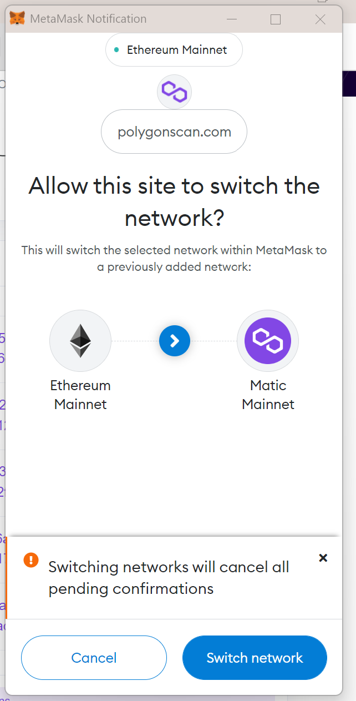
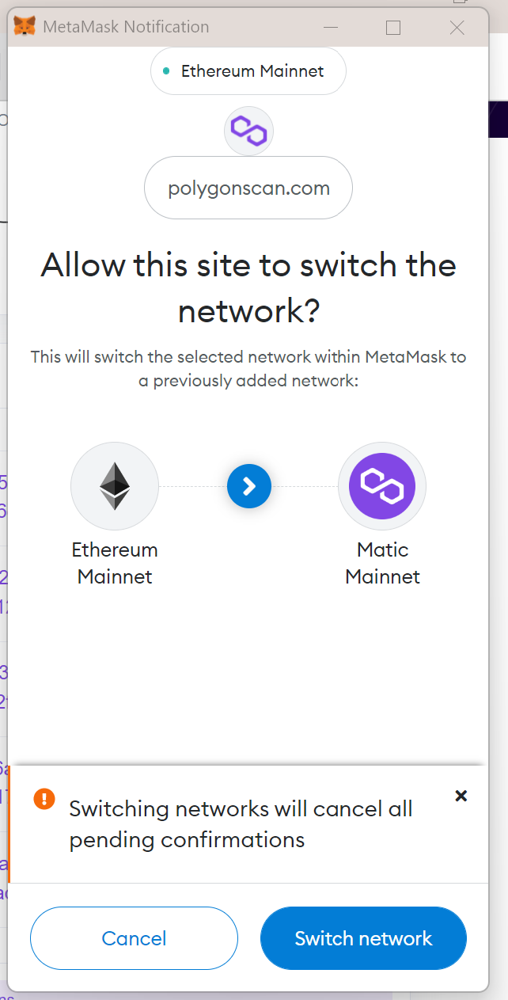

Support KuoriciniDAO on Gitcoin
Until 23 June, you can support KuoricinaDAO in Gitcoin!
Gitcoin Quadratic Funding rewards more the projects with many small supporters.
100 people that donate ONE dollar count more than one person with 100!
And is more easy than what it looks!
- Go to gitcoin and create a github account
- Go to our grant page and add to cart
- Checkout
- Confirm on wallet!
- Consider to increase your Trust profile
1. Go to Gitcoin and signup github account
2. Go to our grant page and add to cart


3. Checkout!
Choose the currency. You can use currency that you actually have in your wallet.
Default is DAI, 1 DAI is 1 dollar. If you have been using KuoriciniDAO you are using MATIC, you can put 3 MATIC.
Contact us on [Discord] or [Telegram] we can help you with funding your wallet!

5. Confirm on wallet!
Connect to your Metamask and confirm the payment!
Thank you for your contribution and spread the word!


6. Consider to increase your Trust profile
To avoid double payments by same profile, Github rewards profiles with good Trust.
To enhance the value of your contribution, please consider to Enhance your Trust going to your profile and connecting it to Gitcoin Passport.
Supporta KuoriciniDAO on Gitcoin
Fino al 23 Giugno, puoi supportare KuoricinaDAO su Gitcoin!
Gitcoin Quadratic Funding premia di piu' i progetti con tanti piccoli contributi.
100 persone che donano UN dollaro contano di piu' che una persona che ne dona 100!
Ed e' piu facile di quanto sembra!
- Vai su Gitcoin e crea un account Github
- Vai sulla nostra pagina dei grant e aggiungi al carrello
- Checkout!
- Conferma sul wallet
- Considera di alzare il tuo Trust profile
1. Vai su Gitcoin e crea un account Github
2. Vai sulla nostra pagina dei grant
3. Checkout!
Scegli la valuta. Puoi usare la valuta che hai gia' nel tuo wallet.
Quella di default DAI, 1 DAI vakle 1 dollaro. Se stai usando gia' KuoriciniDAO allora stai usando MATIC, puoi mettere 3 MATIC.
Contattaci su [Discord] o [Telegram] possiamo aiutarti a caricare il tuo wallet!
5. Conferma sul wallet!
Connetti il tuo Metamask e conferma il pagamento!
Grazie per il tuo contributo e diffondi il verbo!
6. Considera di alzare il tuo Trust profile
Per evitare pagamenti doppi dallo stesso profilo, Gitcoin premia i profili con un alto Trust.
Per alzare il valore del tuo contributo, per favore considera di alzare il tuo livello di Trust entrando nel tuo profilo e connettendoti Gitcoin Passport.
Create your first Crypto Wallet on PC
Is not difficult to create your first crypto wallet! Follow the below steps and join the world community of money without banks!
Here at KuoriciniDAO we believe crypto technology is not just about money. There is so much to coming with Blockchain and Web3! And it all starts wth having your first wallet!
These instructions will help you to setup a crypto wallet for Desktop PC (Windows, Mac, Linux) on any recent Browser (Chrome, Brave, Edge, Firefox, etc).
After this setup you can:
- Start to use KuoriciniDAO
- Support us on crowdfunding Gitcoin: 1 dollar is good! (remember: before 23 June!)
- And countless other apps coming, the journey just starts
And is more easy than what it looks!
- Install Metamask plugin
- Setup Metamask
- Add Polygon network
- Topup a dollar
- Connect to KuoriciniDAO
1. Install Metamask plugin


2. Setup your wallet!
Click the Fox!
Assuming this is the first time, you have to create a wallet. If you already have the 15 words from another wallet, click on import.
The Local Password.
This protect your wallet from other people on your PC (like the PIN of the phone)The 15 words !
They allows you to access your crypto from anywhere anytime in the future. You can lose the LOCAL password but you cannot lose the 15 words! If you use only one computer and you feel safe and don’t want to put much money, you can skip this step and save the words later.
Congratulations !
You have your first wallet!Don't give your 15 words to anyone, ok?

3. Add Polygon Network

 

4. Topup a dollar
When you interact on a blockchain, you don't give your data to a corporation, you pay a few cents to make internet computer work for you.
Open the Fox Metamask and click on your address (the one starting with "0x" and ask some friend to send you a dollar to start!
We are happy to send you a dollar if you join our community and help us to test the Pilot and maybe you can support us on Gitcoin grant with a dollar!
Say hello and paste your address. Don't worry this is your public address to receive funds
[Discord]
[Twitter]
[Telegram]

5. Connnect to KuoriciniDAO
Done! Now you can start using KuoriciniDAO and let us know what you think about it!
Please consider donating a dollar!.
Gitcoin works with Quadratic Funding, it matters how many
people contribute more than the amount.
100 people donating 1 dollar worth 100 times than 1 person donating 100 dollars.

Crea il tuo primo Crypto Wallet su PC
Non e' difficile creare il tuo primo wallet Crypto! Segui le istruzioni qua sotto e unisciti alla comunita' mondiale dei soldi senza banche!
Qui in KuoriciniDAO crediamo che la tecnologia crypto non e' solo a questione di soldi. Ci cono cosi' tanti nuovi aspetti in arrivo con la Tecnologia e Web3! E tutto comincia con il farti il tuo primo wallet!
Alla fine di questi passaggi potrai:
- Cominciare a usare KuoriciniDAO
- Aiutarci nel crowdfunding su Gitcoin: anche 1 dollaro va bene! (ricorda: prima del 23 Giugno!)
- E c'e' un mondo nuovo di applicazioni scoprirai a cui potrai collegarti non piu con la tua mail, ma con il tuo wallet
Ed e' piu' semplice di quanto sembra!
- Installa il plugin Metamask
- Setup Metamask
- Aggiungi la rete Polygon
- Aggiungi 1 dollaro
- Connettiti a KuoriciniDAO
1. Installa il plugin Metamask
2. Setup Metamask
Clicca la volpe!
Assumendo che questa sia la prima volta, devi creare un nuovo wallet. Se hai gia' le 15 parole da un altro wallet, clicca su import.
La Password Locale.
Protegge il wallet da altre persone sul tuo PC (come il PIN del telefono)Le 15 parole!
Ti permettono di accedere alle tue crypto da qualunque posto in qualunque momento nel futuro. Puoi perdere la passord LOCALE ma non puoi perdere le 15 parole! Se usi solo un computer e ti senti sicuro e non vuoi usarlo per tanti soldi ma solo per KuoriciniDAO, puoi anche fare skip e salvare le parole in un altro momento.
Congratulazioni !
Hai fatto il tuo primo wallet!Mi raccomando, mai, mai dare le 15 parole a nessuno, ok?
3. Aggiungi la rete Polygon
4. Aggiungi 1 dollaro
Quando interagisci con la blockchain, non stai dando i tuoi dati a una corporation, paghi qualcghe cent per far lavorare il computer internet per te.
Apri la volpe Metamask e clicca sul tuo indirizzo (quello che comincia con "0x") e chiedi a un amico di mandarti un dollaro!
Noi siamo contenti di mandarti un dollaro se ti unisci alla nostra community e ci aiuti a testare il Piolt e magari puoi aiutarci sul nostro Gitcoin grant con un dollaro!
Mandaci un ciao e incolla il tuo indirizzo. Non preoccuparti quello e' solo l'indirizzo di ricezione. Nessuno puo' accedere al tuo wallet senza le 15 parole!
[Discord]
[Twitter]
[Telegram]
5. Connettiti a KuoriciniDAO
Fatto! Ora puoi iniziare a connetterti su KuoriciniDAO e facci sapere cosa ne pensi!
Per favore considera di donarci un dollaro!.
Gitcoin funziona con il Quadratic Funding, conta quante persone contribuiscono
piu' dell'ammontare.
100 persone che donano 1 dollaro valgono 100 volte piu di 1 perdsona che dona 100
dollari.